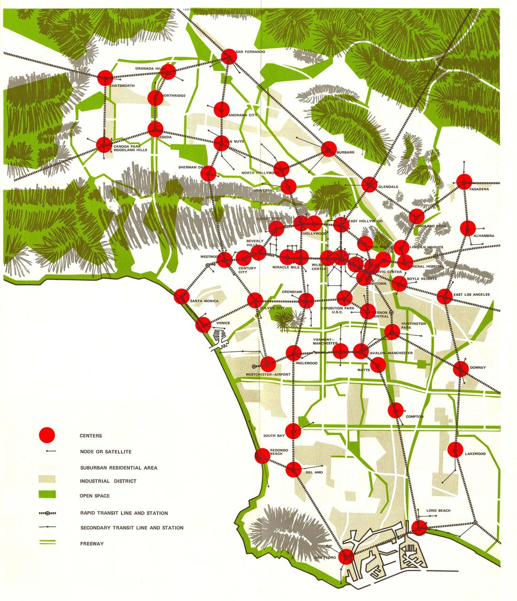

Los Angeles was planned as a utopia at least four times — as a city of homes, as a
freeway machine, as a constellation of centers, and as a scatter of
cooperative experiments. This map lays the 1974 plan itself over today's city and measures
each ideal with the newest authoritative data: parcel by parcel, tower by tower, postmile by postmile.
The four starting models were fact-checked first. All four survive, none intact: two had their lineage or dates
wrong, and the fourth needed three more sites to be a pattern rather than an anecdote.
“Every family a detached house, a yard and a car.”
ideal confirmedBroadacre lineage refuted
Not Wright's. Broadacre City appeared in The Disappearing City (1932) — after Los Angeles had already zoned itself horizontal (first municipal zoning ordinance 1904; Residence District Ordinance 1908). Broadacre gave each family ~1 acre to farm; LA sold 50-ft lots. A parallel, not a descendant.
Half the dream was dropped. The “nature integrated” part — Olmsted Brothers & Bartholomew's 1930 regional parks plan — was shelved; the “city of homes” part was kept.
Exclusive by design. Deed covenants and the federal 1939 HOLC grades decided whose garden it was.
mapped · parcel-levelEvidence: single-family zoning covers 75.3% of the City's residential land (Nov 2026), but on the 2026 Assessor roll those houses hold only 30.8% of its 1.6 million homes.
2Autopia — the infrastructure utopia
Banham, Los Angeles: The Architecture of Four Ecologies
term confirmeddate & authorship corrected
1971, not 1972 (Allen Lane, London). The four ecologies: Surfurbia, Foothills, the Plains of Id, Autopia.
Banham did not coin “Autopia.” Disneyland's Autopia ride opened with the park on 17 July 1955, sixteen years earlier. He borrowed the word and turned it into a reading of the freeway as a way of life.
Two different utopias. The planners' version (Arroyo Seco Parkway, 1940; State Freeway & Expressway System, 1959) promised speed. Banham's was a defence written inside congestion; the automated 60-mph image belongs to GM's 1939 Futurama.
mapped · postmile-levelEvidence: 345,000 vehicles/day on I-10 at Vermont (Caltrans 2024); the region's 20 worst bottlenecks cost 9.9 million vehicle-hours in 2024.
3The 1970 Centers Concept — the polycentric utopia
Concept Los Angeles, Planning Director Calvin S. Hamilton
confirmednumbers & dates corrected
Dates. Published January 1970; approved by the Planning Commission 6 Aug 1970; adopted by City Council 3 Apr 1974.
Count. The 1970 text designates 48 centers (29 in the City); the adopted 1974 diagram shows 56 (37 in the City). “Roughly 50” holds.
The deal. Each center gets a ~¼-mile core around a rapid-transit station; the suburbs are reserved for single-family use. It beat three rivals — “Dispersion”, “Corridors” and a “Low Density” concept (model 1 by another name).
Blueprint? Partly. Its centers hierarchy carried into the 1996 General Plan Framework, but rail came 16 years later at the earliest (1990) and is still arriving (2027–31); nodes like Century City pre-dated it.
mapped · strongestEvidence: the plan's own sheet, rubber-sheeted onto the city, and all 56 centers tested at their exact core intersections against every high-rise and station.
4Communitarian & modernist pockets — the social utopias
Llano del Rio · Crestwood Hills · + three added
confirmedoverstatements corrected
Llano del Rio (1 May 1914, Job Harriman): real, but not “just north of LA” — 63 km from City Hall, beyond the San Gabriels. Alice Constance Austin's kitchenless feminist city was never built; the colony (peak ~1,100) failed on water and left for Louisiana in 1918.
Crestwood Hills (Mutual Housing Association, 1946; four musicians, ~400 members; A. Quincy Jones & Whitney R. Smith): “eco-conscious, shared-lot” is overstated — individual lots, shared park and nursery. Mortgage financing forced racial covenants; the 1961 Bel Air fire destroyed 49 homes.
Added: Little Landers, Tujunga (1913) · Baldwin Hills Village (1942) · Elysian Park Heights, Chavez Ravine (1950–53).
mapped · footprintsEvidence: five sites drawn from their official boundaries (City monuments, Assessor parcels, State landmark) — the sharpest stories, the thinnest statistics.
Considered, not mapped: Broadacre City (no LA site); the 1930 Olmsted–Bartholomew parks plan (no digitised geometry available — a candidate for a follow-up);
the Case Study House program (individual prototypes rather than a social model).
Where each utopia landed
The 1974 plan sheet is laid over today's city as a translucent layer: drag the divider (or use the slider) to swipe between
plan and today, turn the opacity down, or switch the multiply blend off to see the paper itself. Pick a model below;
click any center, parcel area, count point or bottleneck for detail.
What the overlay shows
The 1970 plan was two utopias, and only one won. Concept Los Angeles promised to intensify centers and preserve suburbs. Preservation is a zoning default and it held: 75.3% of residential land is still single-family. Intensification needed capital and transit: only 12 of 56 centers have both high-rises and a station within ½ mile — 8 under the plan's own ¼-mile core test — and 28 have neither.
But “neither” is not “suburban”: 5 are job centres built low (Glendale has 29,147 jobs within ½ mile, more than the median center that passed both tests, 18,409, yet only 2 buildings of 150 ft),
8 have Metro rail within a mile, a line under construction, or a busway / Metrolink stop, 8 are dense low-rise neighbourhoods (≥4,000 homes within ½ mile), and only 7 are still suburban.
The garden owns the land, not the people. On the 2026 Assessor roll, single-family houses are 66% of residential parcels but hold 31% of the City's 1.6 million homes; buildings of 5+ units hold 40% on 5% of residential parcels. The suburb is densifying from inside: 16,551 single-family lots now carry two or more units.
Towers went where the plan said — and piled up downtown. 66% of the City's 627 high-rises stand within ½ mile of a 1974 center core, on 5.8% of its land (33% within ¼ mile, on 1.5%). But 45% of all in-center towers sit in the four downtown circles. Of the 21 towers of 12+ storeys completed since 2020, 11 landed in plan centers.
Towers and trains arrived in different places. Towers without rail: Warner Center, Beverly Hills, Century City, Westwood, Santa Monica — the affluent west; the subway reaches three of them only in 2027, and Santa Monica's station is 850 m from its core. Rail without towers: Crenshaw, Watts, Compton, Expo Park, Boyle Heights, Inglewood, Culver City, North Hollywood — mostly lines laid on old railroad rights-of-way.
Autopia's worst knot is its birthplace. Caltrans' #1 bottleneck for all of 2024 — and again in 2025 Q2 — is the 110 northbound at Solano Ave, where the Harbor Freeway becomes the 1940 Arroyo Seco Parkway, beside the ravine where Elysian Park Heights was meant to stand: 779,806 vehicle-hours lost in a year.
Social utopias survive as buildings, not as societies. Village Green endures as condominiums, Crestwood Hills as private houses, Little Landers as a museum hall, Llano as stone ruins. The one site cleared completely became 203 acres of stadium and parking — the social utopia literally paved over by Autopia.

The adopted diagram (Los Angeles City Planning Dept., 3 Apr 1974) — the same 300-ppi scan used for the overlay. Via the LA Metro Research Library.All 56 centers — table view
Center (1974)
Core (exact intersection)
Outcome ½ mi
Outcome ¼ mi
High-rises ½ mi
¼ mi
Tallest (ft)
Nearest open rail (m)
Rail
Jobs ½ mi
Homes ½ mi
Inside “neither”
Sources: newest authoritative layer for each element
Every layer was chosen before any analysis — newest official source first, and no estimation where a measured record exists.
Element
Source
Vintage
Grain
Replaces / note
1974 plan
Concept Los Angeles diagram, LA City Planning (LA Metro Research Library scan)
adopted 3 Apr 1974
native 300 ppi (~12.7 m/px)
original embedded scan, not a re-render
Center cores
LA County eGIS CAMS address street lines
edited Nov 2026
exact intersection
replaces hand-estimated points (were off by up to 1.7 km)
Shoreline control
LA County boundary
Nov 2025
surveyed coast
anchors the plan overlay
High-rises to 2020
LARIAC6 building outlines (LiDAR heights)
flown 2020
footprint, ≥150 ft
LARIAC7 (2023–24) exists but its server refused this build
High-rises 2020–26
LADBS Certificates of Occupancy, new buildings ≥12 storeys & ≥100k sq ft
to Nov 2026
building
fills the 2020→2026 gap (City of LA only)
Rail (open)
LA Metro GTFS rail feed
7 Nov 2026
station
includes D Line §1 (opened 8 May 2026)
Rail (building)
LA Metro under-construction & planned stations
Jun 2026
station
ESFV set to “under construction” after the 19 Oct 2026 groundbreaking
Busway
LA Metro busway stations (G, J Line)
Jun 2023
station
dedicated busway stops only
Zoning
City of LA zoning
edited 5 Nov 2026
zone polygon
—
Built form
LA County Assessor parcel roll
2026 roll
parcel (805,901)
replaces 1-km zoning hexagons
HOLC 1939
Mapping Inequality v3 (Univ. of Richmond DSL), Source Cooperative mirror
Jul 2026
graded area
replaces the County's 2022 derivative
Traffic volume
Caltrans Traffic Census AADT
2024 counts
count station
newest published year
Congestion
Caltrans D7 Mobility Performance Report
calendar 2024 + 2025 Q2
postmile + queue length
replaces the single-quarter GIS layer (2024 Q4, earlier mislabeled 2022)
City Historic-Cultural Monuments; Assessor parcels; NPS; CHL No. 933
Nov 2026; 2025
footprint
replaces point coordinates
Centers: jobs, homes, commuter rail
LEHD LODES8 Workplace Area Characteristics (Census); 2026 Assessor roll; Metrolink GTFS; LARIAC buildings 120–149 ft
2023 jobs · 2026 roll · May 2026 GTFS · 2020 flight
census block · parcel · station · building
splits the 28 “neither” centers into four sub-types (scripts/centres_more.py)
Method
Plan overlay. The 300-ppi scan embedded in the 1974 PDF is rubber-sheeted with a thin-plate spline on 122 control points: 51 inland center discs ↔ their exact core intersections, and 71 points on the drawn shoreline ↔ the County's surveyed coast (matched automatically, coarse-to-fine). The five centers drawn on the shoreline are left out because the planners placed them schematically on the beach, which would fold the sheet. No folds remain (Jacobian checked). The diagram is schematic: leaving each center out in turn, the spline predicts it within 403 m (median). Tiles z9–13, WebP.
Centers. All 56 discs detected on the scan (exactly the plan's stated count). Each is tested at its named core — the exact County centerline intersection (e.g. Wilshire Blvd & S Vermont Ave). Realised = ≥5 buildings ≥150 ft (LARIAC 2020; footprint parts within 35 m merged) or ≥12 storeys (CofO since 2020) and an open Metro rail station, both within ½ mile; the ¼-mile version applies the plan's own core radius.
Garden suburb. Zoning: City CATEGORY field; single-family = R1, RS, RE, RW1, RZ and variants + RA. Built form: the Assessor's own UseType per parcel (SFR / condo / income residential / commercial); SFR lots with ≥2 recorded units flagged as ADU lots. HOLC polygons intersected with both.
Autopia. Every 2024 Caltrans count point within 120 m of a freeway, unthinned. Bottlenecks transcribed from the Caltrans report tables and located on Caltrans' tenth-mile postmiles; the queue is drawn upstream from the head postmile for its reported average extent.
Limits. Post-2020 towers outside the City (Long Beach, Glendale, Burbank, Santa Monica) are missing until LARIAC7 can be read. Parcel dots use the Assessor's centroids, not lot outlines. The roll can under-record ADUs. 77.7% of District 7 loop detectors were offline in Q4 2024, so delay figures lean on imputation.